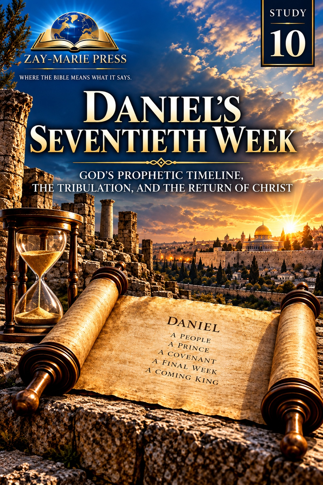
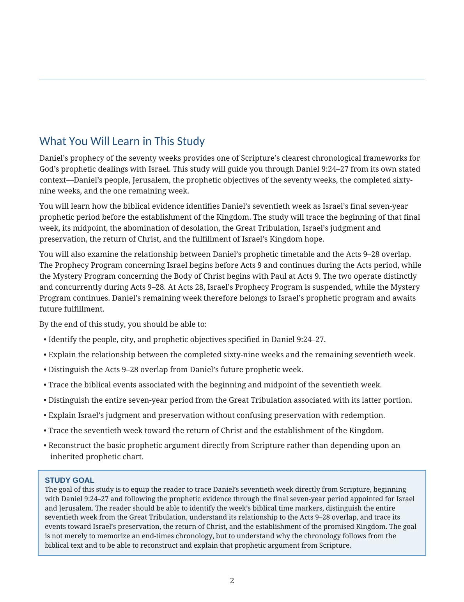
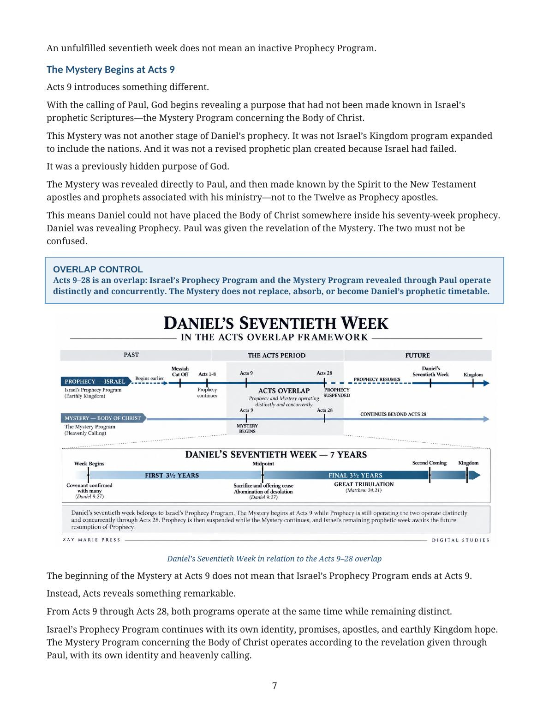
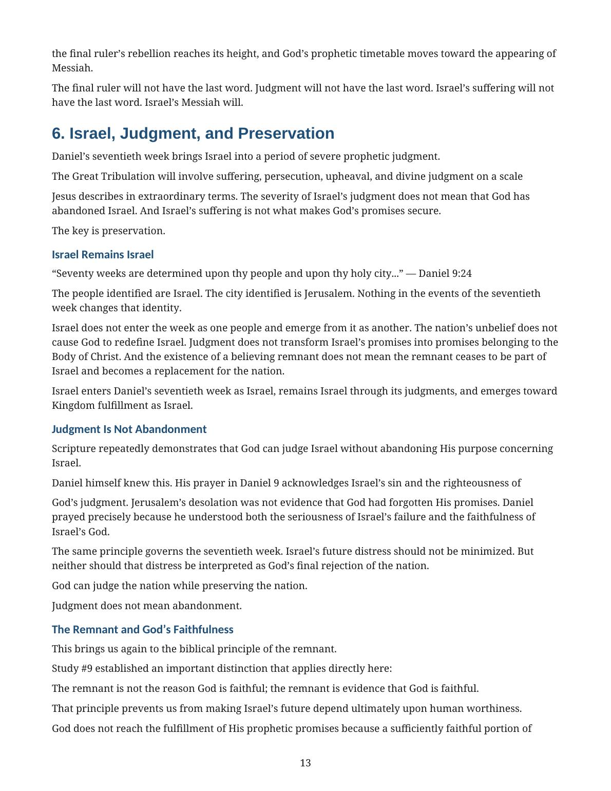
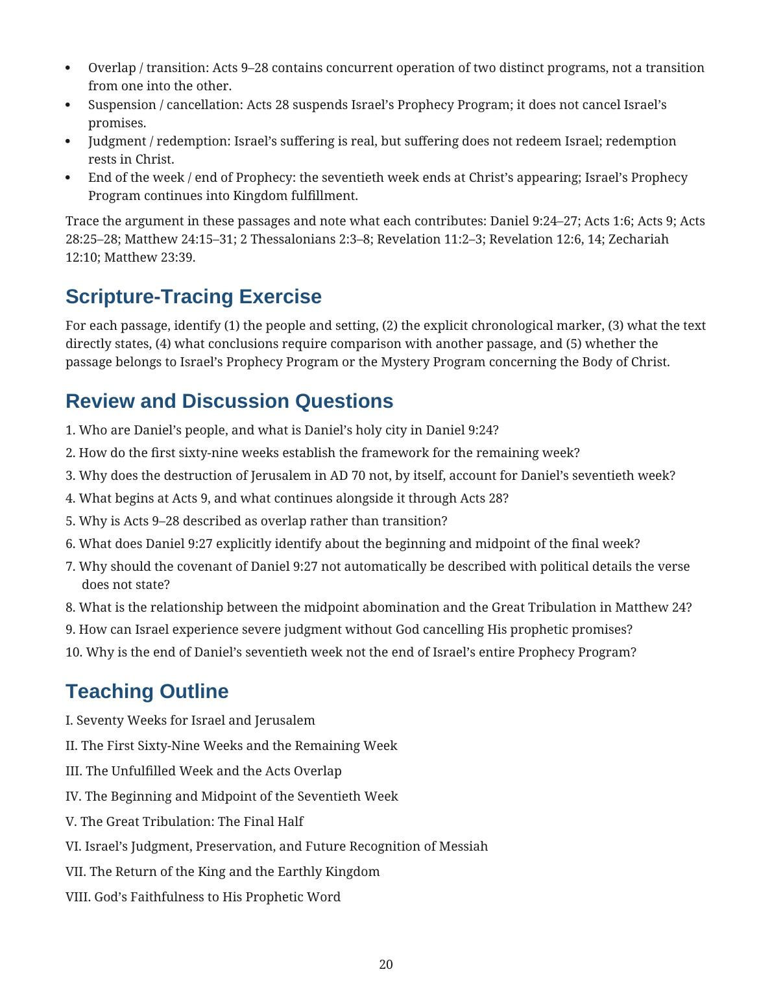

Daniel’s Seventieth Week
Israel’s Final Prophetic Week, the Great Tribulation, and the Coming Kingdom
A Biblical Examination of Daniel 9, Israel’s Prophetic Timetable, the Acts Overlap, Judgment, Preservation, Messiah’s Appearing, and Kingdom Fulfillment
Daniel’s seventy weeks are determined upon Daniel’s people, Israel, and Daniel’s holy city, Jerusalem. This study begins with Daniel 9:24–27, follows the completed sixty-nine weeks, and establishes why one final seven-year week remains.
It then traces the week’s beginning, midpoint, Great Tribulation, Israel’s judgment and preservation, the return of Christ, and the promised earthly Kingdom—while keeping Daniel’s prophetic timetable distinct from the Mystery revealed through Paul.
Why Does Daniel’s Seventieth Week Matter?
Daniel 9 gives Scripture’s controlling prophetic framework for Israel and Jerusalem. Its remaining seventieth week is not exhausted by the destruction of Jerusalem in AD 70, nor is it transferred to the Body of Christ. The prophecy awaits its future fulfillment within Israel’s Prophecy Program.
During Acts 9–28, Prophecy and Mystery operate distinctly and concurrently. At Acts 28, Israel’s Prophecy Program is suspended, not cancelled. Daniel’s remaining week therefore remains part of Israel’s future prophetic purpose and moves toward Messiah’s appearing and Kingdom fulfillment.
Follow Daniel’s Prophetic Framework
Daniel’s People, Holy City, and Prophetic Setting
Begin where Daniel begins: Israel, Jerusalem, and the objectives God determined for them.
The Seventy-Week Framework
Establish the completed sixty-nine weeks and the one remaining seven-year week.
The Unfulfilled Week and the Acts Overlap
Keep Daniel’s future week distinct while Prophecy and Mystery operate concurrently in Acts 9–28.
The Week Begins and Reaches Its Midpoint
Follow Daniel 9:27’s explicit markers for the covenant, sacrifice, offering, and midpoint.
The Great Tribulation: The Final Half
Distinguish the complete seven-year week from the latter period Jesus associates with the abomination.
Israel, Preservation, and the Coming King
Trace judgment, preservation, Messiah’s appearing, and the earthly Kingdom promised to Israel.
Examine the Passages for Yourself
Daniel 9:24–27
Establishes the people, city, objectives, divisions, and final-week markers of the prophecy.
Acts 1:6
Shows Israel’s Kingdom expectation still in view after the resurrection.
Acts 9
Marks the beginning of the Mystery revealed through Paul while Prophecy continues.
Acts 28:25–28
Marks the suspension of Israel’s Prophecy Program without cancellation of Israel’s promises.
Matthew 24:15–31
Connects the abomination with the Great Tribulation and Messiah’s appearing.
2 Thessalonians 2:3–8
Adds prophetic detail concerning the final ruler and his self-exaltation.
Revelation 11–13
Supplies time markers that illuminate the final half of the week.
Zechariah 12–14
Traces Israel’s future recognition of Messiah, deliverance, and Kingdom fulfillment.
God’s Prophetic Word Concerning Israel Will Stand
“What God determined concerning Daniel’s people and Daniel’s holy city, He will fulfill.”
The final week belongs to the prophetic purpose determined for Israel and Jerusalem. The Mystery revealed through Paul does not rewrite Daniel’s audience, absorb Israel’s promises, or place the Body of Christ inside Israel’s final week.
Preview the Study Before You Purchase
Click any page to enlarge it for reading.
{kind=link}

What You Will Learn
See the study’s learning outcomes, Scripture-first method, and final-week scope at a glance.
{kind=link}

The Acts Overlap Framework
See why Daniel’s remaining week belongs to Israel’s Prophecy Program while Mystery continues distinctly.
{kind=link}

Israel, Judgment, and Preservation
Examine how severe judgment neither changes Israel’s identity nor cancels God’s promises.
{kind=link}

Scripture-Tracing Exercise and Teaching Outline
Work directly from the passages, then follow the full teaching outline.
A Focused Study Built for
Understanding and Teaching
23-Page In-Depth Biblical Study
A sustained, Scripture-first examination of Daniel’s final prophetic week.
Seven Core Teaching Sections
Progress from Daniel’s people and city to the final week, Messiah’s appearing, and Kingdom.
Daniel 9 Framework Study
Establish the seventy weeks, the sixty-nine completed weeks, and the one remaining week.
Acts Overlap Control
Keep Daniel’s future week within Israel’s Prophecy Program while Mystery operates distinctly in Acts.
Ten Review Questions
Test the study’s distinctions concerning Daniel 9, the week, Israel, and the Body.
Teaching Outline
A ready framework for explaining the final week without depending on an inherited chart.
Guided Further Study
Trace the key texts on the framework, midpoint, preservation, Messiah’s appearing, and Kingdom.
Final Synthesis Exercise
Build the entire argument from Scripture and distinguish explicit statements from broader synthesis.
Daniel’s Seventieth Week
23-page digital PDF · For personal use